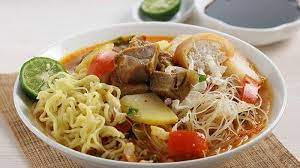

Soto Mie

Description
Learn how to make Soto Mie Daging (noodle soup with beef) for family's dinner food with this step-by-step recipe!
Ingredients - Broth
- 500 grams beef shank, dice into small cubes.
- 2.5 litre water
- 5 kaffir lime leaves
- 1 lemongrass stalk, crushed
- 2 bay leaves
- 1 1/2 tsp salt
- 3 tsp pepper powder
- 1 tbsp sugar
- 2 scallion stalks, cut into 1cm length
- 2 tbsp cooking oil
Ingredients - Spice Paste
- 6 candlenuts, toasted
- 2cm piece of turmeric, burn briefly using direct fire
- 7 cayenne peppers
- 12 shallots
- 4 garlic cloves
Ingredients - Accompaniments
- 2 potatoes, peel then steam
- 100 grams dry noodles, boiled
- 50 grams glass noodles, boil briefly until just tender
- 150 grams cabbage, minced
- 2 tomatoes, chopped
- 5 glass noodles-stuffed lumpia/spring roll (you can buy ready-to-use spring rolls in a morning market)
- 5 celery stalks, minced
- 4 tbsp lime juice
- 4 tbsp sweet soy sauce
Steps
- Place all spice paste ingredients in a pestle. Grind them using stone mortar until making a fine, smooth paste. Set aside.
- Heat oil over medium heat in a wok. When simmer, add spice paste, kaffir lime leaves, and lemongrass to the wok. Stir for 1 minute or until fragrant. Add water and stir briefly until blended. Add beef shanks, stir until beef start to colour and boiled perfectly, about 30 minutes.
- Add salt, pepper powder, and sugar to the wok. Braise in low heat for 30 minutes or more, until they are tender enough. Stir in between to let the spices absorbed. Once the beef becomes tender, add scallion and stir briefly. Remove from wok.
- Prepare 5 bowls and distribute accompaniments (except sweet soy sauce and lime juice) evenly to each bowl. Add beef and broth to each bowls.
- Serve Soto Mie Daging (noodles soup with beef) alongside sweet soy sauce, lime juice, and steamed rice.